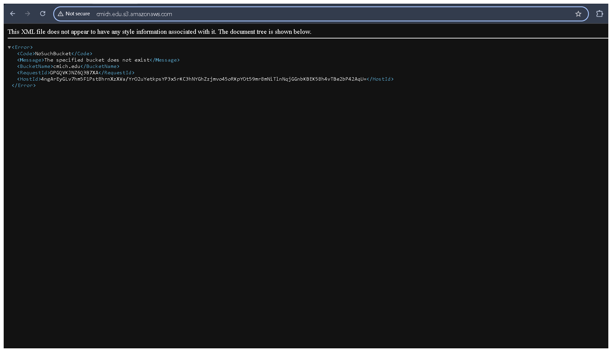
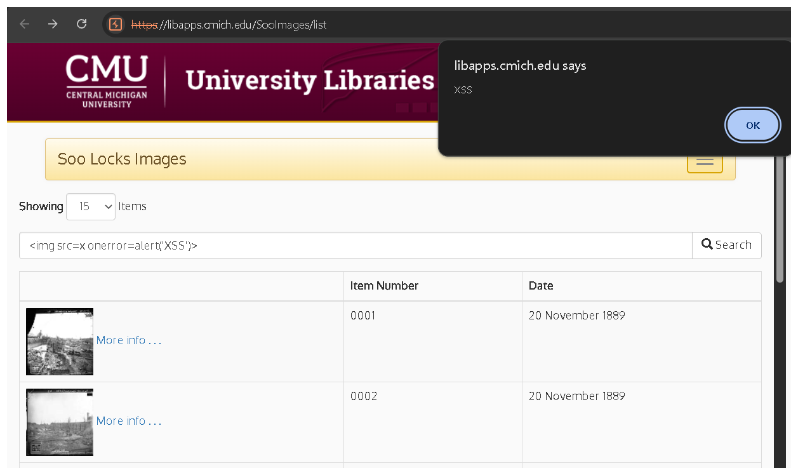
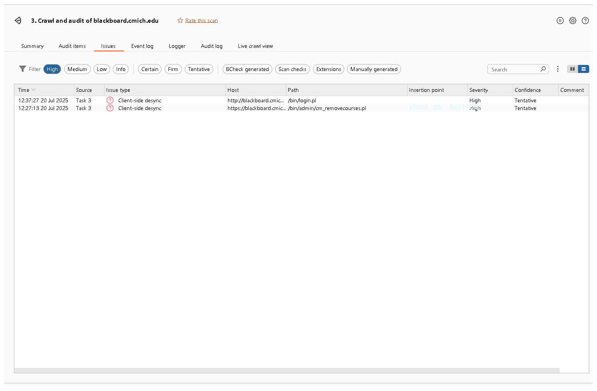
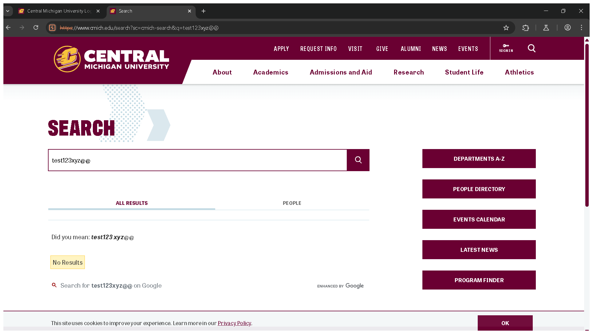
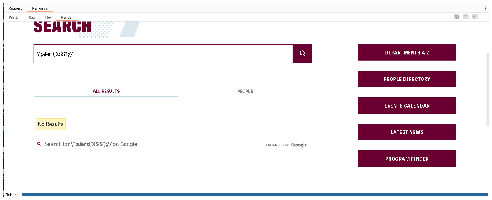
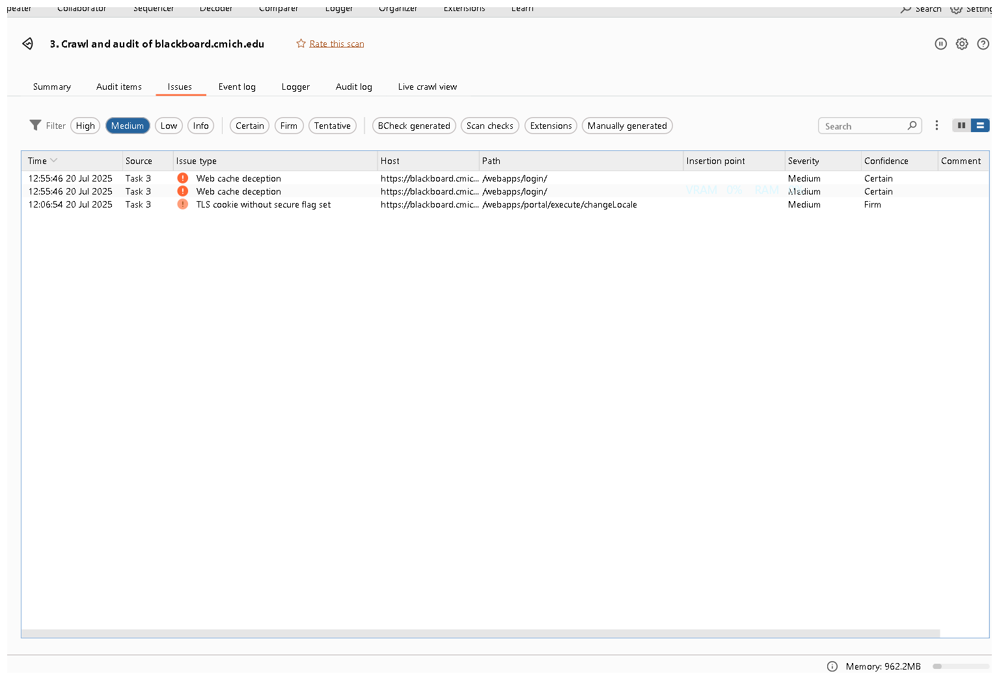
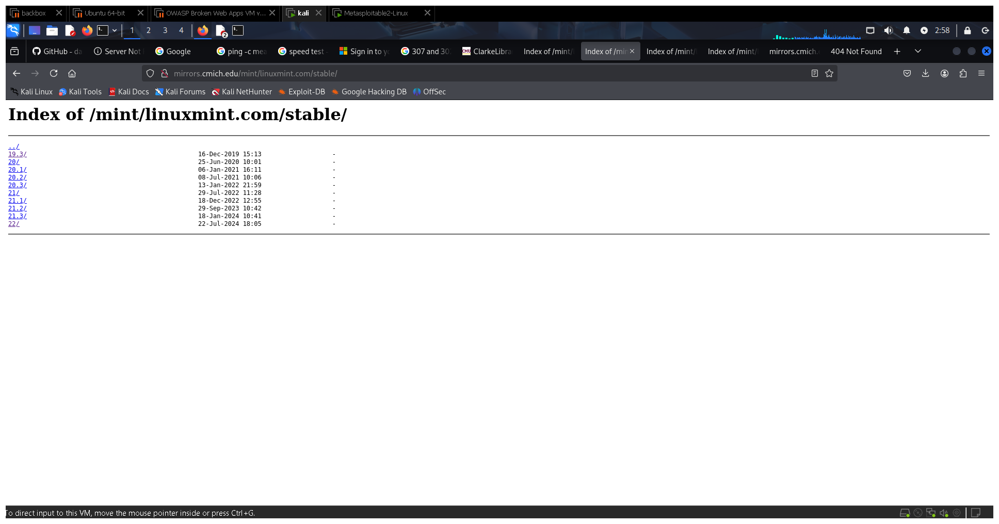
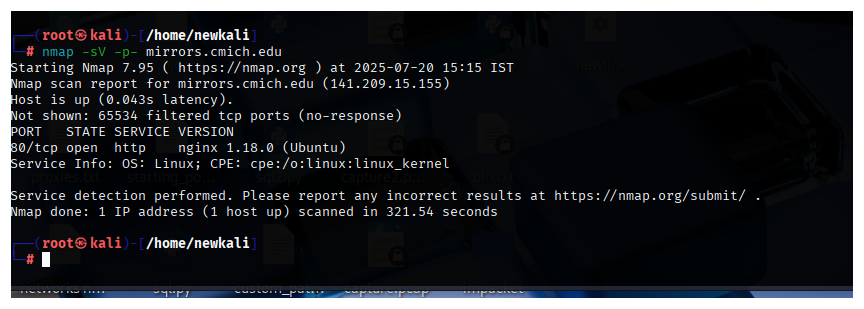
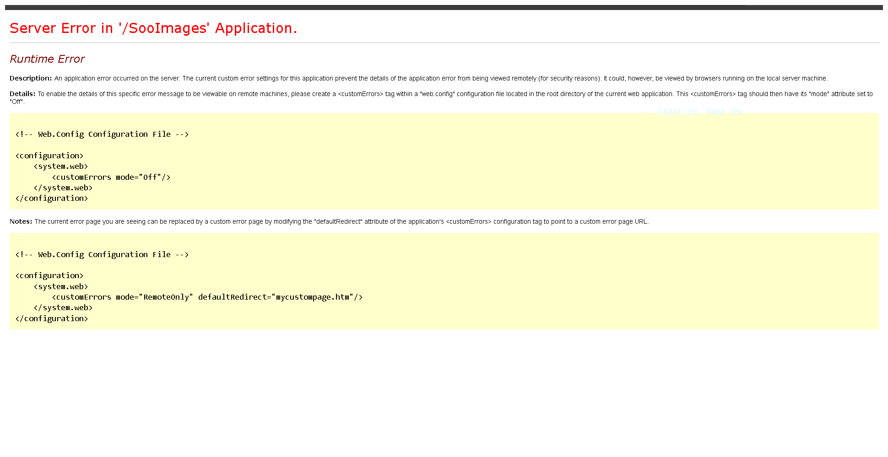

3. Vulnerability Findings
Critical Risk Vulnerabilities
1. Remote Code Execution via Log4Shell (CVE-2021-44228)
Host: `cbalab.cmich.edu`
Severity: Critical
CVSS 3.1 Score: 10.0 (AV:N/AC:L/PR:N/UI:N/S:C/C:H/I:H/A:H)
Reference: CWE-502 (Deserialization of Untrusted Data), OWASP A06:2021
Description: The VMware Horizon instance is vulnerable to the Log4Shell vulnerability, which allows an unauthenticated attacker to execute arbitrary code by sending a malicious JNDI lookup string in an HTTP header.
Business Impact: A successful exploit would grant an attacker complete control over the server, leading to data theft, malware deployment, and a pivot point into the internal network.
Remediation: Immediately apply the patches specified in VMware Security Advisory VMSA-2021-0028.
2. Chained Exploit Leading to Remote Code Execution
Host: `cmichmaestro.cmich.edu`
Severity: Critical
CVSS 3.1 Score: 9.9 (AV:N/AC:L/PR:L/UI:N/S:C/C:H/I:H/A:H)
Reference: CWE-79 (XSS), CWE-352 (CSRF), CWE-120 (Buffer Overflow)
Description: A stored Cross-Site Scripting (XSS) vulnerability can be used to execute a Cross-Site Request Forgery (CSRF) attack against a logged-in administrator. This CSRF attack then triggers a buffer overflow to achieve remote code execution.
Business Impact: This complex chain allows a low-privilege attacker to ultimately gain full administrative and system-level control over the LISTSERV Maestro application and server.
Remediation: Apply patches from the vendor. Implement robust input validation and output encoding to mitigate XSS. Utilize anti-CSRF tokens throughout the application to prevent CSRF attacks.
3. Remote Code Execution via Server-Side Template Injection (SSTI - CVE-2024-45186)
Hosts: `filesender.se.cmich.edu`, `d175137.dynamic.cmich.edu`
Severity: Critical
CVSS 3.1 Score: 9.8 (AV:N/AC:L/PR:N/UI:N/S:U/C:H/I:H/A:H)
Reference: CWE-1336 (Improper Neutralization of Expressions in Templates), OWASP A03:2021
Description: The FileSender application improperly processes user-supplied input in a backend template engine, allowing attackers to inject commands that are executed by the server.
Business Impact: Attackers can gain a reverse shell, read sensitive files, or steal cloud credentials from the server environment.
Remediation: Update the FileSender application to the latest version. Ensure user-supplied input is never passed directly to a template engine for processing.
4. Potential Unauthenticated RCE via SharePoint "ToolShell" (CVE-2025-53770)
Hosts: `bline.cmich.edu`, `dar.cmich.edu`, `apps.cmich.edu`, `cdn.cmich.edu`
Severity: Critical
CVSS 3.1 Score: 9.8 (AV:N/AC:L/PR:N/UI:N/S:U/C:H/I:H/A:H) - *Conditional*
Reference: OWASP A06:2021-Vulnerable and Outdated Components
Description: These servers run legacy versions of IIS, which are common hosts for on-premise SharePoint installations potentially vulnerable to the "ToolShell" attack. Internal confirmation is required.
Business Impact: If vulnerable, an attacker could gain complete control of the SharePoint server, exfiltrate all university data, and use stolen keys to impersonate any user on the network.
Remediation: Conduct an immediate internal audit to verify if SharePoint is installed. If found, apply all security updates, rotate ASP.NET machine keys, and restart IIS.
5. Buffer Overflow in Nginx (CVE-2014-3616)
Host: `aux-helium.cmich.edu`
Severity: Critical
CVSS 3.1 Score: 9.8 (AV:N/AC:L/PR:N/UI:N/S:U/C:H/I:H/A:H)
Reference: CWE-120 (Buffer Overflow), OWASP A06:2021
Description: Nginx version 1.6.2 is vulnerable to a buffer overflow when processing chunked transfer encoding requests, leading to Denial of Service or potential Remote Code Execution.
Business Impact: An attacker could crash the web server or potentially disclose sensitive memory contents, leading to full system compromise.
Remediation: Immediately upgrade the Nginx package using `sudo apt-get install --only-upgrade nginx`.
High Risk Vulnerabilities
6. Subdomain Takeover via Dangling DNS Record
Host: `cmich.edu` (via CNAME record)
Severity: High
CVSS 3.1 Score: 8.6 (AV:N/AC:L/PR:N/UI:N/S:C/C:H/I:L/A:N)
Reference: CWE-552 (Files or Directories Accessible to External Parties), OWASP A01:2021-Broken Access Control
Description: A DNS CNAME record for a subdomain of `cmich.edu` points to an Amazon S3 bucket that no longer exists or has been deprovisioned. This allows an attacker to claim the S3 bucket and host arbitrary, malicious content on a trusted university subdomain.
Business Impact: Enables highly convincing phishing attacks, malware distribution, and brand damage, as the malicious content is served from a legitimate `cmich.edu` domain.
Remediation: Immediately identify and remove the dangling DNS CNAME record from the `cmich.edu` DNS zone. Audit all external DNS pointers to ensure they resolve to active, owned resources.
Proof of Concept
Navigating to the subdomain results in an AWS "NoSuchBucket" error, confirming the resource is unclaimed.
7. Stored Cross-Site Scripting (XSS) on University Libraries Application
Host: `libapps.cmich.edu`
URL: `/SooImages/list`
Severity: High
CVSS 3.1 Score: 8.8 (AV:N/AC:L/PR:L/UI:R/S:C/C:H/I:H/A:H)
Reference: CWE-79 (Improper Neutralization of Input During Web Page Generation), OWASP A03:2021-Injection
Description: The search functionality in the "Soo Locks Images" application is vulnerable to stored XSS. An attacker can inject malicious JavaScript code into the search field, which is then stored and executed in the browser of any user who views the page, including administrators.
Business Impact: Allows an attacker to steal session cookies, hijack administrator sessions, deface the website, or redirect users to malicious sites to harvest credentials.
Remediation: Implement strong input validation on all user-supplied data. Apply context-aware output encoding before rendering user input back to the page. Implement a Content Security Policy (CSP) as a defense-in-depth measure.
Proof of Concept
The following payload was injected into the search bar, resulting in a successful JavaScript alert execution.
<img src=x onerror=alert('XSS')>

8. XML External Entity (XXE) and Signature Confusion (CVE-2025-27773 / CVE-2024-52806)
Hosts: `filesender.se.cmich.edu`, `d175137.dynamic.cmich.edu`
Severity: High
CVSS 3.1 Score: 8.6 (AV:N/AC:L/PR:N/UI:N/S:C/C:H/I:N/A:N)
Reference: CWE-611 (Improper Restriction of XML External Entity Reference), OWASP A05:2021
Description: The SimpleSAMLphp library accepts malformed SAML assertions, allowing an attacker to inject XXE payloads to read local files from the server.
Business Impact: Attackers can exfiltrate sensitive files, such as configuration files containing passwords, source code, and system files.
Remediation: Perform an internal audit to identify the version of SimpleSAMLphp and upgrade to the latest patched release.
9. HTTP Request Smuggling (CVE-2024-42179)
Host: `archive.applymed.cmich.edu`
Severity: High
CVSS 3.1 Score: 8.1 (AV:N/AC:L/PR:N/UI:R/S:U/C:H/I:L/A:N)
Reference: CWE-444 (Inconsistent Interpretation of HTTP Requests), OWASP A10:2021
Description: The server is vulnerable to request smuggling, where ambiguous HTTP requests are interpreted differently by front-end and back-end systems.
Business Impact: Can be exploited to hijack user sessions, bypass security controls, poison the web cache, and steal sensitive data submitted by other users.
Remediation: Normalize ambiguous requests at the network edge (WAF/proxy). Enable the request smuggling filter in IIS and upgrade proxy servers.
10. Client-Side Desynchronization
Host: `blackboard.cmich.edu`
URLs: `/bn/login.pl`, `/bn/admin/cm_removecourses.pl`
Severity: High
CVSS 3.1 Score: 7.5 (AV:N/AC:L/PR:N/UI:N/S:U/C:N/I:H/A:N) - *Tentative*
Reference: CWE-444 (Inconsistent Interpretation of HTTP Requests)
Description: The application is potentially vulnerable to client-side desynchronization. This occurs when a single request from an intermediary, like a reverse proxy, is interpreted as multiple requests by the back-end server, which can desynchronize the connection and lead to response queue poisoning.
Business Impact: A successful exploit could allow an attacker to capture the responses intended for other users, potentially exposing sensitive data or session information.
Remediation: Review the configuration of all intermediary devices (proxies, load balancers) to ensure strict adherence to RFC standards for HTTP requests. Normalize ambiguous requests at the network edge.
Proof of Concept
Automated scanning with Burp Suite identified two endpoints as potentially vulnerable.
11. Local Privilege Escalation via Outdated Nginx (CVE-2016-1247)
Host: `aux-helium.cmich.edu`
Severity: High
CVSS 3.1 Score: 7.8 (AV:L/AC:L/PR:L/UI:N/S:U/C:H/I:H/A:H)
Reference: CWE-269 (Improper Privilege Management)
Description: The Nginx 1.6.2 installation has insecure log directory permissions, which can be leveraged to write to arbitrary files as root, leading to a full privilege escalation.
Business Impact: If an attacker gains initial low-privilege access, this flaw allows them to escalate to the `root` user and gain complete control of the server.
Remediation: Immediately upgrade the Nginx package using `sudo apt-get install --only-upgrade nginx`.
12. Stored Cross-Site Scripting (XSS) in WordPress Plugin (CVE-2025-3742)
Host: `blogs.cmich.edu`
Severity: High
CVSS 3.1 Score: 8.0 (AV:N/AC:L/PR:L/UI:R/S:U/C:H/I:H/A:H)
Reference: CWE-79 (XSS), OWASP A03:2021
Description: The "Responsive Lightbox & Gallery" plugin is vulnerable to stored XSS. An authenticated user can inject malicious JavaScript that executes in an administrator's browser.
Business Impact: This allows an attacker to steal an administrator's session cookie, hijack their session, and gain full administrative control of the WordPress site.
Remediation: Update the "Responsive Lightbox & Gallery" plugin to version 2.5.1 or newer. Audit existing posts for malicious scripts.
13. Massive Information Disclosure of Student & Course Data
Host: `blackboard.cmich.edu`
Severity: High
CVSS 3.1 Score: 7.5 (AV:N/AC:L/PR:N/UI:N/S:U/C:H/I:N/A:N)
Reference: CWE-200 (Exposure of Sensitive Information), OWASP A01:2021
Description: The application allows unauthenticated access to sensitive student and course data by manipulating URL parameters. This is a form of Insecure Direct Object Reference (IDOR).
Business Impact: This constitutes a major data privacy violation. The harvested data can be used to launch highly effective, targeted phishing campaigns.
Remediation: Implement proper authorization checks on all endpoints that serve student or course data to ensure that only authenticated and authorized users can access the information.
Medium Risk Vulnerabilities
14. Reflected Cross-Site Scripting (XSS) in Main Search Functionality
Host: `www.cmich.edu`
URL: `/search`
Severity: Medium
CVSS 3.1 Score: 6.1 (AV:N/AC:L/PR:N/UI:R/S:C/C:L/I:L/A:N)
Reference: CWE-79 (XSS), OWASP A03:2021-Injection
Description: The main website's search functionality reflects user-supplied input back to the page without proper sanitization. An attacker can craft a malicious URL containing a JavaScript payload, and if a victim clicks the link, the script will execute in their browser in the context of the `www.cmich.edu` domain.
Business Impact: Can be used for phishing attacks, session cookie theft, or redirecting users to malicious websites.
Remediation: Apply context-aware output encoding to all user-supplied data before it is rendered in the HTML response.
Proof of Concept
The search query is reflected on the page, as shown by both a test string and a potential XSS payload.
 15. Web Cache Deception
Host: `blackboard.cmich.edu`
URL: `/webapps/login/`
Severity: Medium
CVSS 3.1 Score: 5.9 (AV:N/AC:L/PR:N/UI:R/S:U/C:H/I:N/A:N)
Reference: CWE-444 (Inconsistent Interpretation of HTTP Requests)
Description: The application is vulnerable to Web Cache Deception. An attacker can trick the caching mechanism into storing a user's sensitive, private content and then access it directly via a crafted URL. This is achieved by requesting a non-existent file (e.g., `style.css`) on a page containing sensitive data.
Business Impact: An attacker could access sensitive information from a victim's account page, such as personal details, course information, or messages.
Remediation: Configure the cache to only cache static files based on their content type. Do not cache pages with sensitive user information. Implement stricter caching rules that prevent caching of dynamic content based on file extension.
Proof of Concept
Automated scanning with Burp Suite identified the login endpoint as vulnerable.
16. Open Directory Listing & Software Supply Chain Risk
Host: `mirror.cmich.edu`
Severity: Medium
CVSS 3.1 Score: 5.3 (AV:N/AC:L/PR:N/UI:N/S:U/C:L/I:N/A:N)
Reference: CWE-548 (Exposure of Information Through Directory Listing)
Description: The web server (`nginx 1.18.0`) has directory listing enabled, exposing the file structure of software mirrors. This creates a supply chain risk if an attacker gains write access and replaces legitimate packages with trojanized versions.
Business Impact: University students or staff could download and install malware from what they perceive as a trusted university source.
Remediation: Disable directory listing in the Nginx server configuration by removing the `autoindex on;` directive.
Proof of Concept
Navigating to a directory shows a full index of its contents. An Nmap scan confirmed the server details.
 17. TLS Cookie Without Secure Flag Set
Host: `blackboard.cmich.edu`
Severity: Medium
CVSS 3.1 Score: 4.3 (AV:N/AC:L/PR:N/UI:R/S:U/C:L/I:N/A:N)
Reference: CWE-614 (Sensitive Cookie in HTTPS Session Without 'Secure' Attribute)
Description: A session cookie set by the application over an HTTPS connection is missing the `Secure` flag. This means the browser could transmit the cookie over an unencrypted HTTP connection if the user visits an insecure part of the site or is tricked into doing so.
Business Impact: An attacker in a position to intercept network traffic (e.g., on public Wi-Fi) could steal the session cookie and hijack the user's session.
Remediation: Ensure that all cookies, especially session cookies, are set with the `Secure` flag.
Proof of Concept
Automated scanning with Burp Suite identified the insecure cookie setting.

18. Authorization Bypass via Path Encoding in IIS (CVE-2014-4078)
Hosts: `apps.cmich.edu`, `bline.cmich.edu`, `cdn.cmich.edu`
Severity: Medium
CVSS 3.1 Score: 6.8 (AV:N/AC:L/PR:L/UI:N/S:U/C:H/I:N/A:N)
Reference: CWE-284 (Improper Access Control)
Description: An older vulnerability in IIS allows attackers to bypass directory-level authentication by using specially crafted URLs with short-name path encoding (e.g., `/*~1*/`).
Business Impact: An attacker could gain unauthorized access to protected resources, such as administrative panels or sensitive files.
Remediation: Apply all relevant security patches for IIS from Microsoft.
19. General Stored Cross-Site Scripting (XSS)
Host: `blogs.cmich.edu`
Severity: Medium
CVSS 3.1 Score: 5.4 (AV:N/AC:L/PR:L/UI:R/S:C/C:L/I:L/A:N)
Reference: CWE-79 (XSS), OWASP A03:2021
Description: The application fails to properly sanitize user-supplied input in areas like comment fields, allowing for the injection of malicious JavaScript.
Business Impact: Can lead to session hijacking, website defacement, or redirection to malicious websites.
Remediation: Implement a Content Security Policy (CSP). Enforce context-aware output encoding on all user-supplied data.
Low Risk & Informational Findings
20. Verbose ASP.NET Error Message Disclosure
Host: `libapps.cmich.edu`
Application: `/SooImages`
Severity: Low
CVSS 3.1 Score: 3.7 (AV:N/AC:H/PR:N/UI:N/S:U/C:L/I:N/A:N)
Reference: CWE-209 (Generation of Error Message Containing Sensitive Information)
Description: The application discloses detailed ASP.NET error messages when an exception occurs. These messages contain information about the application's configuration (`web.config`), internal structure, and file paths.
Business Impact: While not directly exploitable, this information can provide an attacker with valuable intelligence for crafting more targeted attacks.
Remediation: Configure the application's `web.config` file to display generic, custom error pages to users by setting `
Proof of Concept
Triggering an error reveals the detailed server error page.
21. Information Disclosure via Public Statistics Directory
Host: `blackboard.cmich.edu`
Severity: Low
Reference: CWE-200 (Exposure of Sensitive Information)
Description: The `/bbstats/` directory is publicly accessible, exposing detailed web server usage statistics.
Remediation: Revoke public access to the `/bbstats/` directory.
22. Verbose ASP.NET Error Messages
Host: `apps.cmich.edu/invoiceparking/Suggestion`
Severity: Low
Reference: CWE-209 (Generation of Error Message Containing Sensitive Information)
Description: The application discloses detailed ASP.NET error messages, including stack traces and internal file paths.
Remediation: Configure the application to display generic, custom error pages to users.
23. Default Apache Web Page
Host: `galaxy.phy.cmich.edu`
Severity: Informational
Description: The server displays the default Apache installation page, indicating it is not properly configured.
Remediation: Identify the server's owner. If not needed, decommission it. If needed, remove the default page.
24. Default IIS Web Page
Host: `francesa.phy.cmich.edu`
Severity: Informational
Description: The server displays the default IIS installation page, indicating it is not properly configured.
Remediation: Identify the server's owner. If not needed, decommission it. If needed, remove the default page.